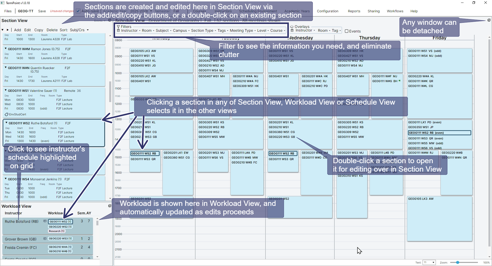
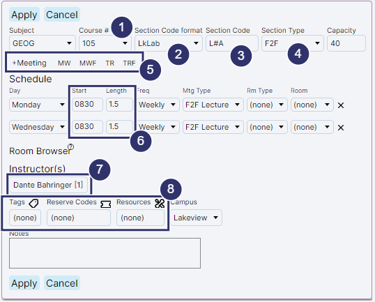

Navigating TermPoint and Editing Basics
The annotated screenshot below identifies the major areas of the TermPoint interface.

Creating and editing a section

-
Specify a subject and course number
-
Pick a section code format (These are defined under Configuration and greatly speed up editing)
-
The section code is automatically supplied (but can be overridden if necessary)
-
Optionally, pick a section type
-
Either add meetings with +Meeting, or choose a block pattern (defined under Configuration)
-
Set scheduling details for the meetings. The available block lengths are determined by the start times (as defined under Configuration). You can override if necessary.
-
Optionally, choose an instructor and associated workload. Workload View will be automatically updated
-
Optionally, choose tags, reserve codes and resources (all configurable under Scheduling Environment)
-
Click 'Apply' to register the edits. Don't forget to periodically save your edits (or use Autosave).
Folding days in the Schedule view
Fold the days you are not working on into narrow strips, so the days you care about get more room.
For example, fold Monday, Wednesday and Friday to see Tuesday and Thursday side by side.
-
Click a day's name to fold that day into a strip. Click the strip to bring the day back.
(The last open day cannot be folded.)
-
Right-click a day's name or a strip for a short menu: Show only that day,
Show one of your block patterns (for example Show MWF), or Show all days.
-
Each strip shows the day's letter and how many sections meet that day. Hover over it for details.
-
The bands on a strip show when sections meet that day, at the same times as the grid beside it.
Narrow bars show meetings, instructor commitments and other schedules shown on the grid that day.
-
If something you selected, a Room Browser suggestion or an Access conflict is on a folded day,
the strip flashes briefly and shows a bar at that time, so you know it is there without opening the day.
Folding is only for looking. It changes nothing in your schedule. All days come back when you change
the semester or the subject focus, and every time you start TermPoint.